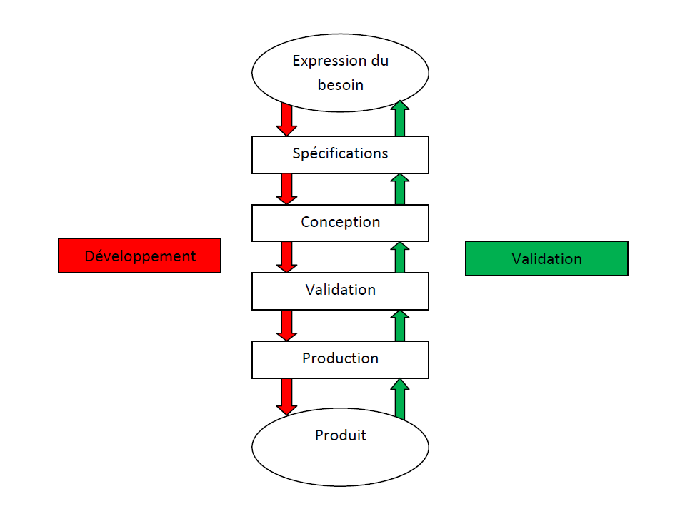

Le modèle en cascade est hérité de l'industrie du BTP. Ce modèle repose sur les hypothèses suivantes :
Les phases traditionnelles de développement sont effectuées simplement les unes après les autres, avec un retour sur les précédentes, voire au tout début du cycle. Le processus de développement utilisant un cycle en cascade exécute des phases qui ont pour caractéristiques :

Created with the Personal Edition of HelpNDoc: Full featured Documentation generator